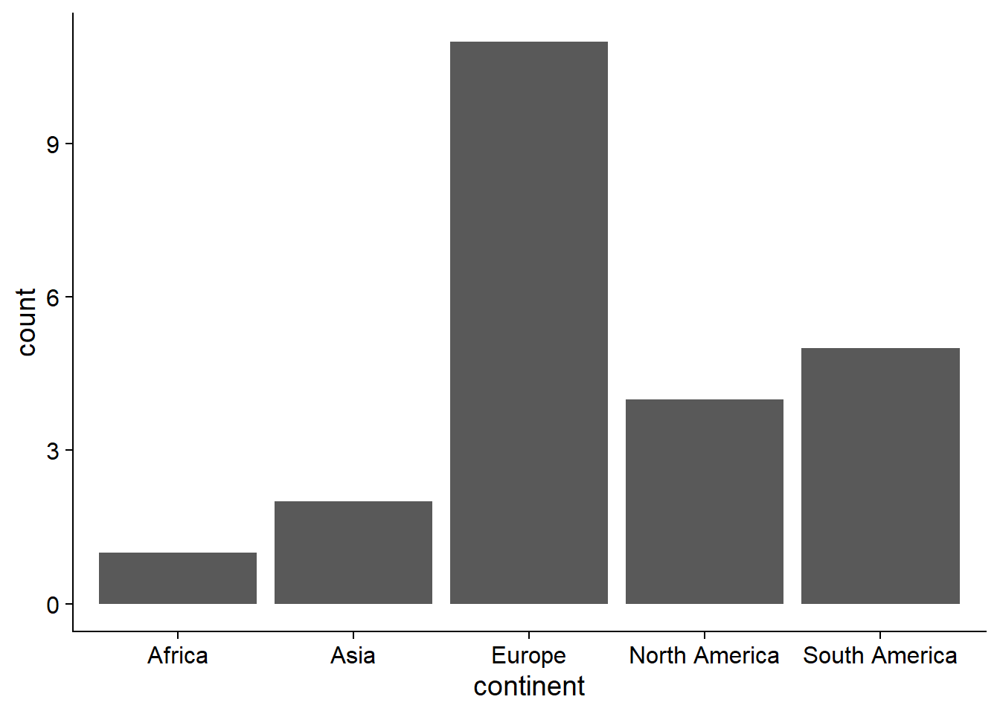
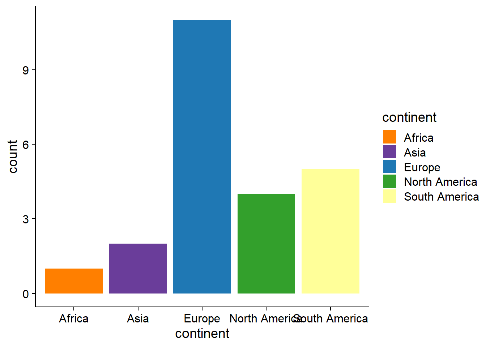

3.1 How many worlcups were hosted in each continent?
df_1 <- tbls_lst$list_of_hosts %>%
filter(!str_detect(continent, "Canceled"))#
df_1 %>%
ggplot(aes(continent))+
geom_bar()
#
df_1 %>%
group_by(continent) %>%
summarise(n = n())%>%
ungroup() %>%
arrange(n) %>%
mutate(continent = factor(continent, levels = unique(continent))) %>%
ggplot(aes(continent, n))+
geom_col(aes(color = continent), fill = "white", show.legend = FALSE, linewidth = 1)+
geom_col(aes(fill = continent), alpha = 0.4, show.legend = FALSE)+
geom_text(data = . %>%
mutate(cont_n = glue::glue("{continent}\n(n = {n})")),
aes(label = cont_n), size = 5,nudge_y = 1)+
geom_text(data = df_1 %>%
group_by(continent, host_nation_s) %>%
summarise(n_host = n()) %>%
group_by(continent) %>%
mutate(n_cont = n(),
prop = sum(n_host)/(n_cont+1),
cum_prop = cumsum(prop))%>%
ungroup() %>%
mutate(host_nation_s = ifelse(n_host >1 , glue::glue("{host_nation_s} x {n_host}"), host_nation_s)),
aes(y = cum_prop, label = host_nation_s),
size = 4
)+
labs(title = "History of hosting world cup",
subtitle = "Number of hosted world cups and hosting countries per continents")+
theme(axis.line = element_blank(),
axis.ticks = element_blank(),
axis.text = element_blank(),
axis.title = element_blank())## `summarise()` has grouped output by 'continent'. You can override using the
## `.groups` argument.
#
df_1[1:24,] %>%
mutate(y = rep(6:1, each = 4),
x = rep(1:4, 6),
host_nation_s = case_when(
str_detect(host_nation_s, "Canada") ~ "Canada\nMexico\nUnited States",
str_detect(host_nation_s, "Japan") ~ "Japan\nSouth Korea",
TRUE ~ host_nation_s),
continent = factor(continent, levels = unique(continent))) %>%
filter(!is.na(continent)) %>%
ggplot(aes(x, y, fill = continent ))+
geom_tile(color = "grey90", size = 1)+
geom_text(aes(label = host_nation_s), size = 4.5)+
geom_text(data = . %>%
group_by(y) %>%
mutate(range = glue::glue("({min(year)}-{max(year)})")) %>%
ungroup(),
aes(label = range),
x = 0,
size = 5)+
scale_x_discrete(expand = expansion(add = 2))+
guides(fill = guide_legend(nrow = 1))+
labs(title = "History of hosting world cup",
subtitle = "Host countries of world cups chronologically orderd and colored by continent")+
coord_equal()+
#annotate("text", size = 7, x = 0.35, y = 6, label = "Start here", angle = 90)+
theme(axis.line = element_blank(),
axis.ticks = element_blank(),
axis.text = element_blank(),
axis.title = element_blank(),
legend.position = "top",
panel.border = element_rect(linetype = "solid", color = "black"))## Warning: Using `size` aesthetic for lines was deprecated in ggplot2 3.4.0.
## ℹ Please use `linewidth` instead.